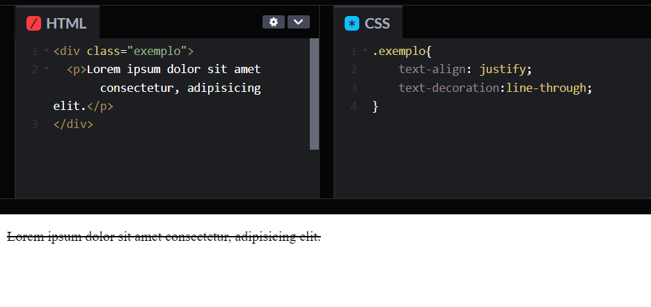
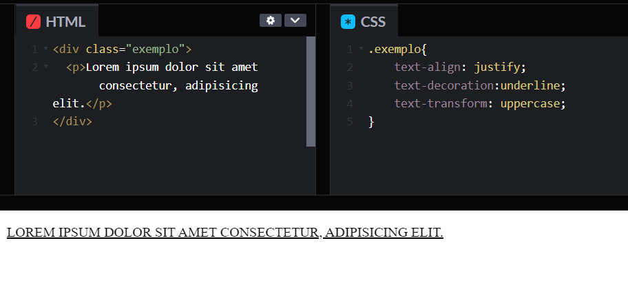
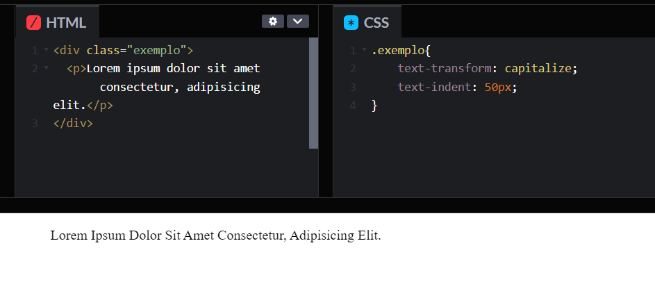
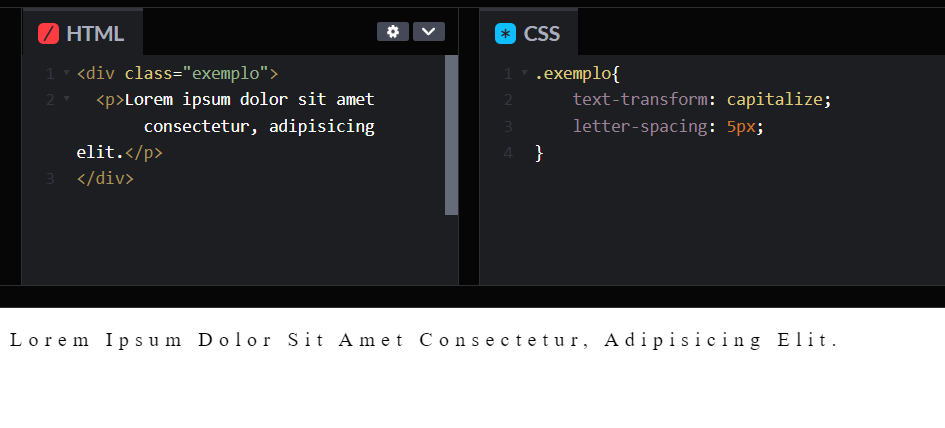
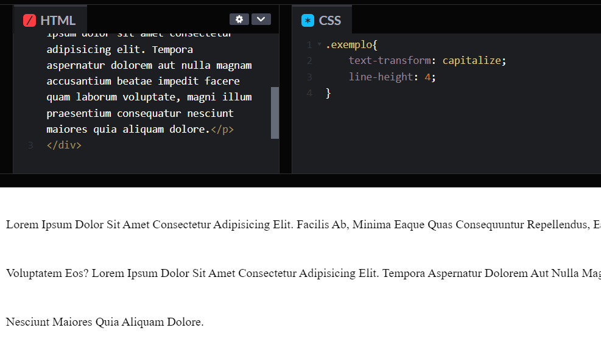
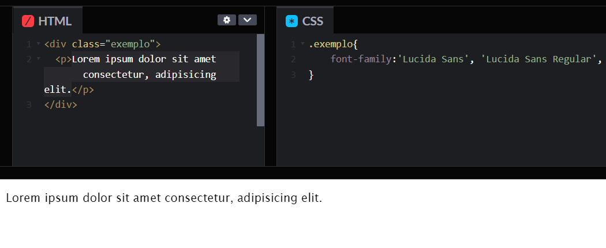
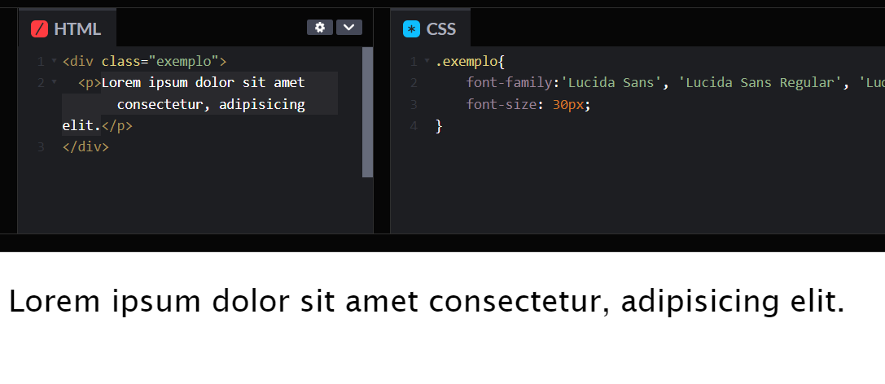
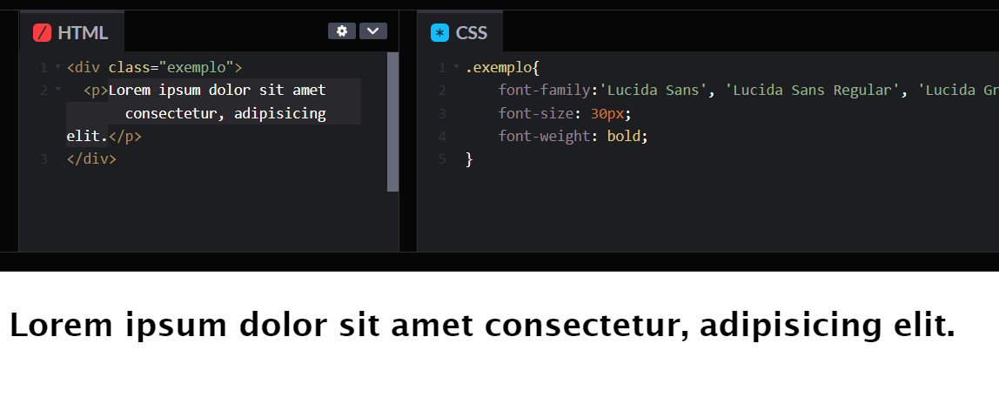
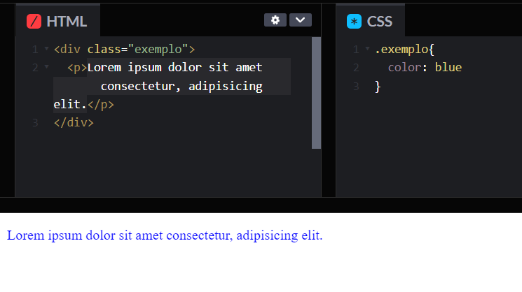
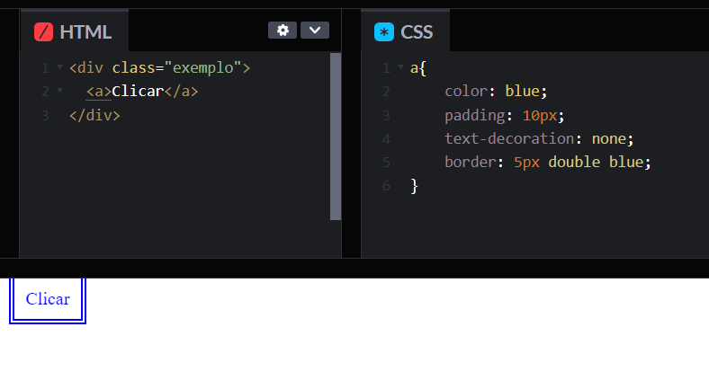

text-align
A propriedade text-align define o alinhamento horizontal do conteúdo de nível embutido dentro de um elemento de bloco ou caixa de célula de tabela. Isso significa que funciona como alinhamento vertical, mas na direção horizontal.
text-decoration
A propriedade text-decoration define a aparência das linhas decorativas no texto. É uma abreviação para text-decoration-line, text-decoration-color, text-decoration-style e a mais recente propriedade text-decoration-thickness.
text-transform
A propriedade text-transform especifica como capitalizar o texto de um elemento. Ele pode ser usado para fazer o texto aparecer em letras maiúsculas ou minúsculas, ou com cada palavra em maiúscula. Também pode ajudar a melhorar a legibilidade do ruby
word-spacing
A propriedade word-spacing define o tamanho do espaço entre as palavras e entre as tags.

text-indent
A propriedade text-indent define o comprimento do espaço vazio (recuo) que é colocado antes das linhas de texto em um bloco.
letter-spacing
A propriedade letter-spacing define o comportamento do espaçamento horizontal entre os caracteres de texto. Esse valor é adicionado ao espaçamento natural entre os caracteres durante a renderização do texto. Valores positivos de espaçamento entre letras fazem com que os caracteres se espalhem mais, enquanto valores negativos de espaçamento entre letras aproximam os caracteres.
line-height
A propriedade line-height define a altura de uma caixa de linha. É comumente usado para definir a distância entre linhas de texto. Em elementos de nível de bloco, especifica a altura mínima das caixas de linha dentro do elemento. Em elementos inline não substituídos, especifica a altura que é usada para calcular a altura da caixa de linha.
font-family
A propriedade font-family especifica uma lista priorizada de um ou mais nomes de famílias de fontes e/ou nomes de famílias genéricas para o elemento selecionado.
font-size
A propriedade font-size define o tamanho da fonte. Alterar o tamanho da fonte também atualiza os tamanhos das unidades.
font-weight
A propriedade font-weight define o peso (ou negrito) da fonte. Os pesos disponíveis dependem da font-family definida no momento.
color
A propriedade color define o valor da cor de primeiro plano do texto e das decorações de texto de um elemento e define o valor da cor atual, pode ser usado como um valor indireto em outras propriedades e é o padrão para outras propriedades de cor, como border-color.
text-decoration
A propriedade text-decoration abreviada define a aparência das linhas decorativas no texto. É uma abreviação para text-decoration-line, text-decoration-color, text-decoration-style e a mais recente propriedade text-decoration-thickness.
Referência Bibliográfica
MOZILLA. CSS: Folhas de estilo em cascata. Disponível em: Ver Site. Acesso em: 31 de mar. de 2023.